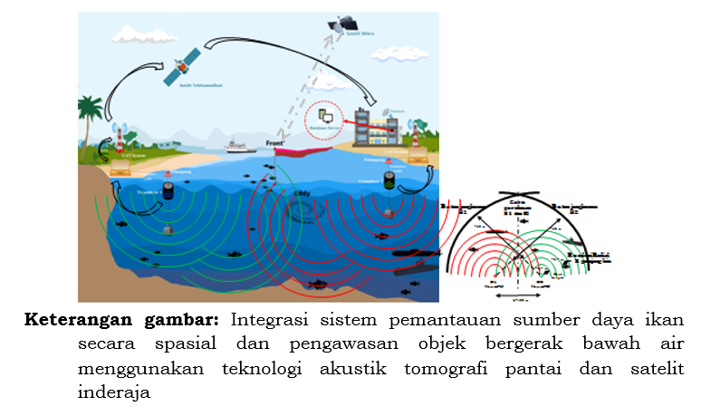

PENERAPAN TEKNOLOGI HIDROAKUSTIK DI BIDANG ILMU DAN TEKNOLOGI KELAUTAN
Aplikasi teknologi hidroakustik dalam ilmu dan teknologi kelautan semakin efektif belakangan ini untuk memperkirakan kelimpahan ikan laut, terutama stok ikan, di mana metode konvensional tidak mungkin dilakukan. Teknologi hidroakustik secara luas telah digunakan untuk memetakan dan mengklasifikasikan konten sumber daya perairan dan hewan benthik yang berada di dasar laut, jenis substrat, dan biota benthik.
Target Strength (TS) merupakan faktor terpenting dalam pendeteksian dan prediksi stok ikan dengan menggunakan hidroakustik. TS adalah ukuran yang dapat menjelaskan kemampuan sebuah target untuk memantulkan gelombang suara yang mengenainya.
Dalam propagasi gelombang suara, jumlah energi per detik yang mengalir melalui area tertentu yang tegak lurus terhadap arah propagasi disebut sebagai intensitas gelombang.
Sistem deteksi dan pengukuran di bawah air melibatkan tiga komponen, yaitu medium, target, dan peralatan. Persamaan sonar dibangun berdasarkan kesamaan atau keseimbangan antara bagian sinyal yang diterima, yang diinginkan (disebut sinyal) dan bagian yang tidak diinginkan (disebut bising atau noise), tergantung pada fungsi sonar spesifik yang diterapkan.
Dalam aplikasi praktis, teknologi hidroakustik telah menjadi alat yang sangat berharga dalam survei dan pemantauan lingkungan laut, membantu dalam mengelola sumber daya perikanan secara berkelanjutan.
Dengan menggunakan data yang dikumpulkan melalui teknologi hidroakustik, para ilmuwan kelautan dapat membuat estimasi yang lebih akurat tentang stok ikan, menjaga keseimbangan ekosistem laut, dan mendukung upaya konservasi laut secara keseluruhan.
Sumber: https://shorturl.at/eoBHX